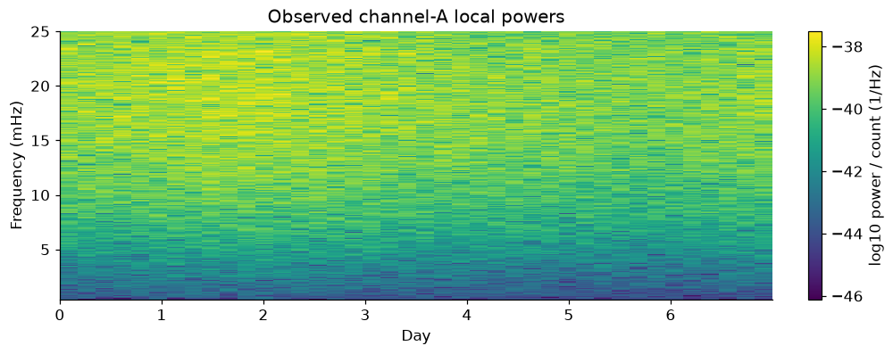
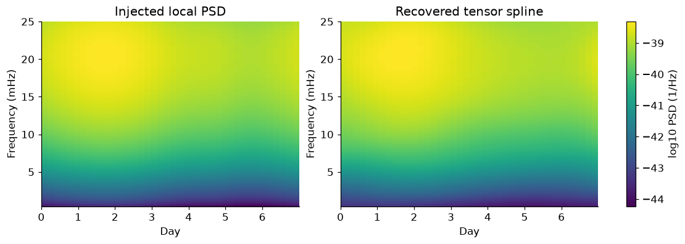
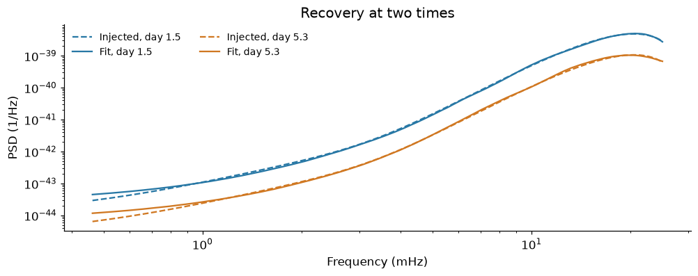
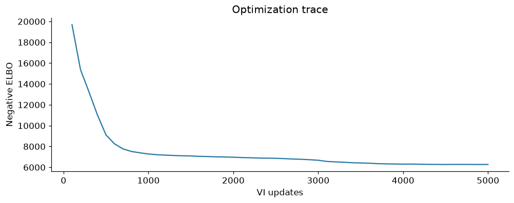

2. Recover a time-varying PSD#
Goal#
Estimate \(S_A(t,f)\) from the nonstationary channel-A time series created in notebook 1. We use the library to form local Fourier statistics, fit a tensor log-P-spline, and reconstruct the PSD.
This is an exploratory VI point reconstruction under a locally stationary power likelihood. Windowing and finite-time effects remain approximations; we do not use the VI draws as calibrated uncertainty intervals.
Setup#
Run notebook 1 once, then select Restart Kernel and Run All Cells here. The fitting cells use public LogPSplinePSD functions.
%matplotlib inline
import matplotlib.pyplot as plt
import numpy as np
import pandas as pd
from log_psplines import (
PowerConfig,
PowerData,
TimeSeries,
fit,
local_wishart_grid,
mask_power,
)
from lisa_case_studies.noise import XYZ_TO_AET
from lisa_case_studies.notebook_tools import COLORS, style
from lisa_case_studies.orbit_reference import DAY
from lisa_case_studies.tutorial_data import (
MatrixSimulation,
amplitude,
load_data,
workspace,
)
style()
a = load_data("scalar_a")
Step 1 — Form local Fourier powers#
Use non-overlapping Hann-tapered windows. Each window supplies complex Fourier coefficients; for one channel, twice its squared magnitude is a summed power with two real degrees of freedom under the local Whittle model. The library normalizes these coefficients to one-sided PSD units.
grid = local_wishart_grid(
TimeSeries(a["data"], a["time"]), segment_length=3024, window="hann"
)
band = (grid.frequency >= 0.4e-3) & (grid.frequency <= 25e-3)
frequency = grid.frequency[band]
time_days = grid.time / DAY
powers = 2 * grid.Y[:, band, 0, 0].real
counts = 2 * grid.counts[:, band]
fig, ax = plt.subplots(layout="constrained")
mesh = ax.pcolormesh(
time_days,
frequency * 1000,
np.log10(powers / counts).T,
shading="auto",
cmap="viridis",
)
ax.set(xlabel="Day", ylabel="Frequency (mHz)", title="Observed channel-A local powers")
fig.colorbar(mesh, ax=ax, label="log10 power / count (1/Hz)")
plt.show()

The powers are noisy observations, not the fitted PSD. A Hann window reduces leakage but correlates nearby Fourier bins, so the power likelihood remains an approximation.
Step 2 — Fix the training/held-out split#
Hold out every fourth time row. Numerical scaling uses training powers only. Neither the injected spectrum nor held-out powers chooses knots or priors.
training = np.arange(len(time_days)) % 4 != 2
scale = float(np.median((powers / counts)[training]))
data = PowerData(
powers / scale, counts, frequency, time_days, units="one-sided PSD / training scale"
)
training_data = mask_power(data, np.broadcast_to(training[:, None], powers.shape))
pd.DataFrame(
{"Time rows": [training.sum(), (~training).sum()]}, index=["Training", "Held out"]
)
| Time rows | |
|---|---|
| Training | 30 |
| Held out | 10 |
Step 3 — Call the library fitter#
The tensor model learns \(\log S_A(t,f)\). Frequency knots are logarithmically spaced; the time basis is smooth across the week. All settings are fixed before viewing reconstruction errors.
config = PowerConfig(
method="vi",
n_interior_knots_time=3,
interior_knots_freq=np.geomspace(frequency[0], frequency[-1], 18)[1:-1],
vi_steps=5000,
vi_lr=0.03,
vi_early_stopping=False,
vi_posterior_draws=96,
spectrum_draws=64,
progress_bar=False,
seed=7,
)
result = fit(training_data, config)
estimate = np.asarray(result.quantiles())[1, ..., 0, 0].real * scale
W1106 12:12:39.540363 2372656 cpp_gen_intrinsics.cc:74] Empty bitcode string provided for eigen. Optimizations relying on this IR will be disabled.
Step 4 — Compare the recovered PSD with the injected channel spectrum#
Truth enters for the first time in this notebook at this evaluation step. The reference below is the local evolutionary spectrum; a finite-window expected periodogram can differ from it.
frozen = MatrixSimulation(
len(a["time"]), float(a["dt"]), np.array([0.0]), a["light_times"][None]
)
a_vector = XYZ_TO_AET[0]
base_matrix = frozen.spectrum(np.array([0.0]), frequency)[0]
base_psd = np.einsum("i,fij,j->f", a_vector, base_matrix, a_vector).real
truth = amplitude(time_days * DAY, float(a["duration"]))[:, None] ** 2 * base_psd[None]
lo, hi = np.log10(truth).min(), np.log10(truth).max()
fig, axes = plt.subplots(1, 2, figsize=(10, 3.5), layout="constrained")
for ax, values, title in zip(
axes,
(truth, estimate),
("Injected local PSD", "Recovered tensor spline"),
strict=True,
):
mesh = ax.pcolormesh(
time_days,
frequency * 1000,
np.log10(values).T,
shading="auto",
cmap="viridis",
vmin=lo,
vmax=hi,
)
ax.set(xlabel="Day", ylabel="Frequency (mHz)", title=title)
fig.colorbar(mesh, ax=axes, label="log10 PSD (1/Hz)")
plt.show()

fig, ax = plt.subplots(layout="constrained")
for index, color in ((8, COLORS["X"]), (30, COLORS["Y"])):
ax.loglog(
frequency * 1000,
truth[index],
color=color,
ls="--",
label=f"Injected, day {time_days[index]:.1f}",
)
ax.loglog(
frequency * 1000,
estimate[index],
color=color,
label=f"Fit, day {time_days[index]:.1f}",
)
ax.set(xlabel="Frequency (mHz)", ylabel="PSD (1/Hz)", title="Recovery at two times")
ax.legend(ncol=2, fontsize=9, frameon=False)
plt.show()

Checks#
Report error on the fixed held-out rows, then inspect the optimization loss. A stable ELBO is an optimization check, not a posterior-convergence guarantee.
heldout_rmse = float(
np.sqrt(np.mean(np.log10(estimate[~training] / truth[~training]) ** 2))
)
assert np.isfinite(estimate).all() and np.all(estimate > 0)
assert np.isfinite(result.vi.losses).all()
pd.DataFrame(
{
"Held-out log10 RMSE": [heldout_rmse],
"Held-out cells": [int((~training).sum() * len(frequency))],
}
)
| Held-out log10 RMSE | Held-out cells | |
|---|---|---|
| 0 | 0.040789 | 3720 |
losses = np.asarray(result.vi.losses)
fig, ax = plt.subplots(layout="constrained")
ax.plot(np.linspace(100, config.vi_steps, len(losses)), losses, color=COLORS["X"])
ax.set(xlabel="VI updates", ylabel="Negative ELBO", title="Optimization trace")
plt.show()
np.savez_compressed(
workspace() / "time_varying_recovery.npz",
frequency=frequency,
time_days=time_days,
estimate=estimate,
truth=truth,
training=training,
heldout_rmse=heldout_rmse,
losses=losses,
physical_scale=scale,
)

Next steps#
Estimate the full stationary XYZ matrix. The main change is to model complex cross-channel structure rather than a single PSD.